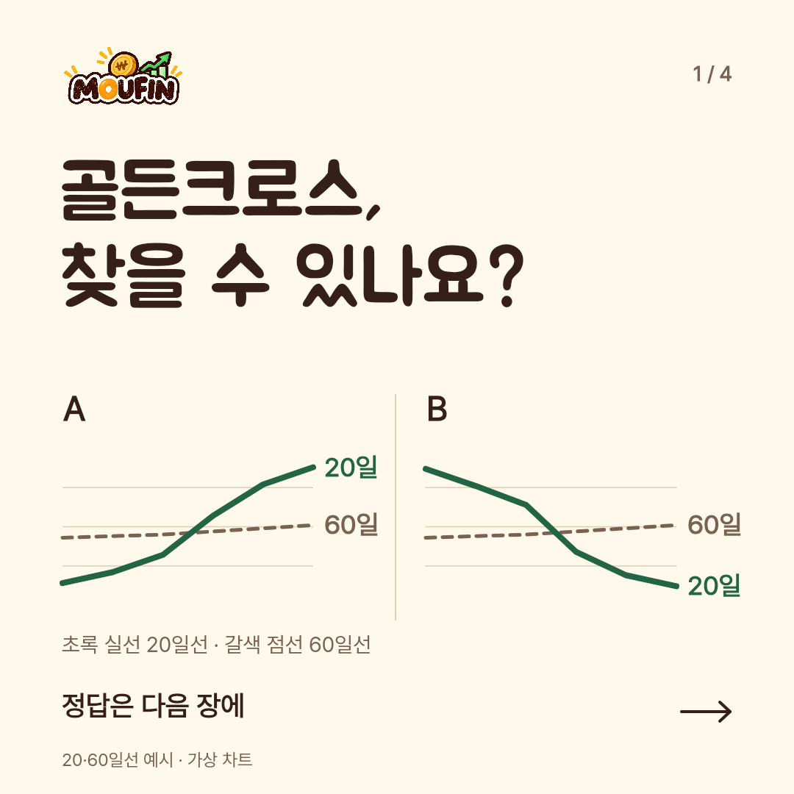
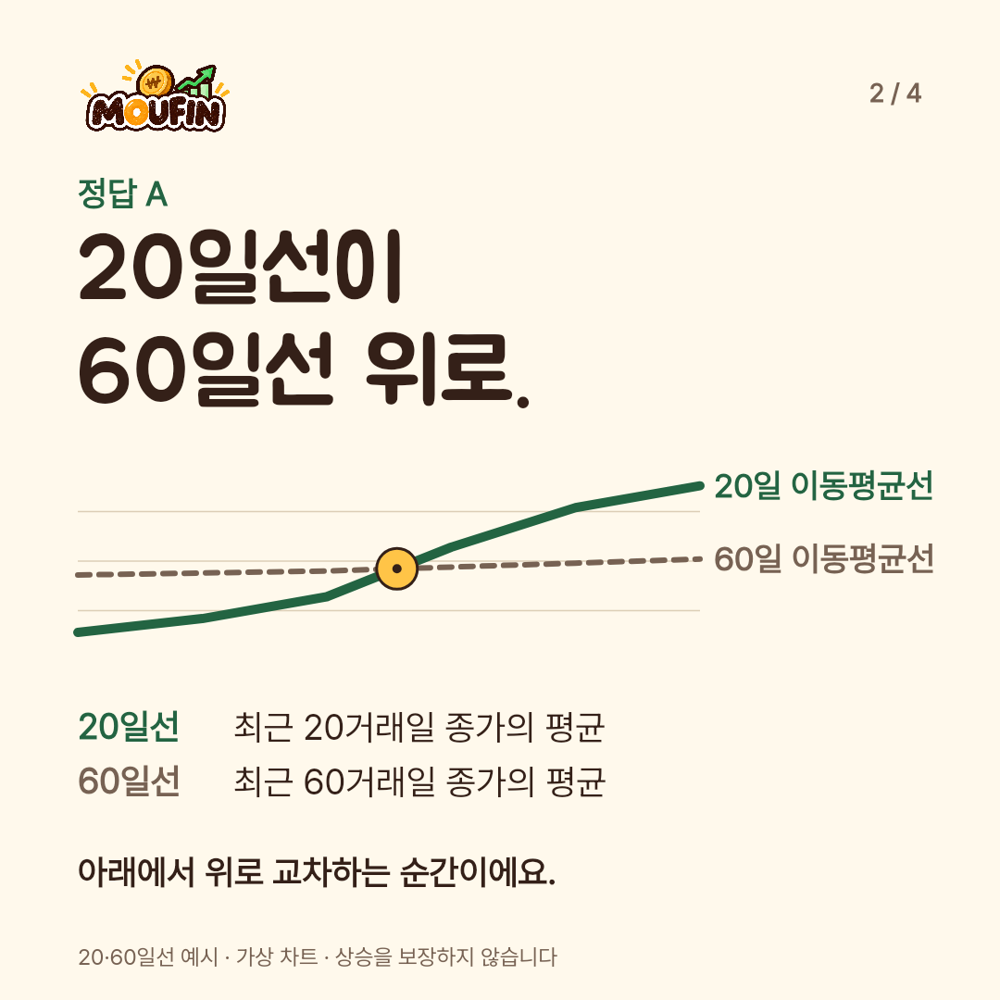
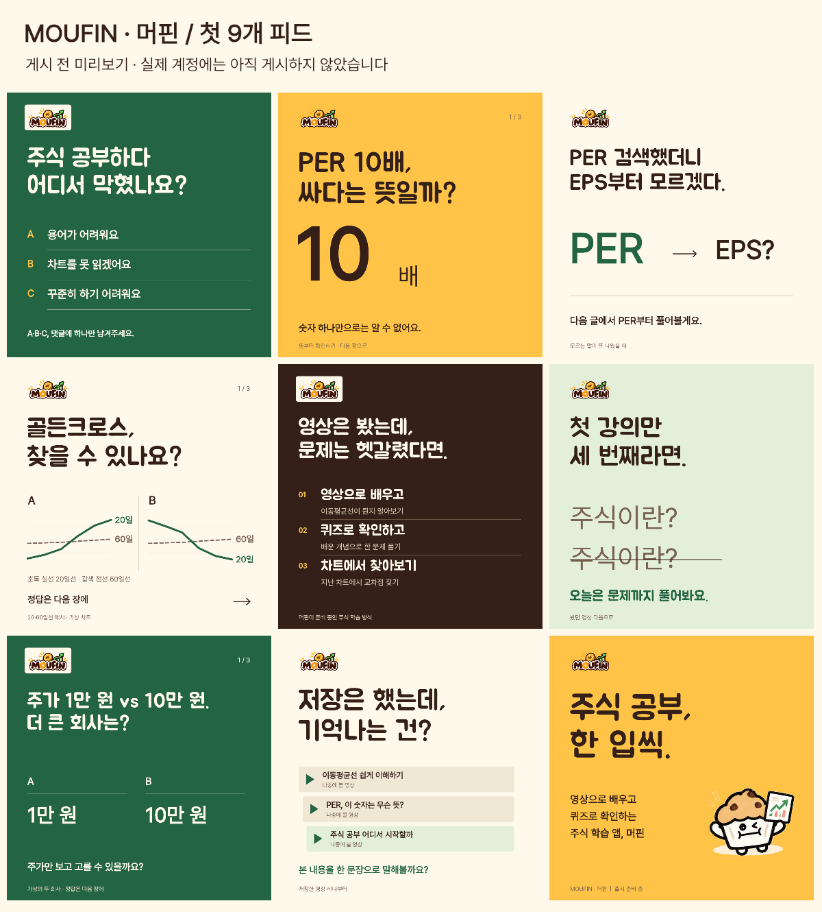

MOUFIN / WORK PREVIEW
머핀의 광고와
첫 게시물
골든크로스 카드뉴스, 피드·스토리 광고, 계정 첫 9칸을 여기서 확인할 수 있습니다.
제작본 · 앱 출시 준비 중 · 실제 광고 및 게시 전
01 / 광고
한 문제에서
한 문제에서
시작하는 광고
정사각형 카드뉴스는 문제·해설·학습 방식·체험 안내 순서로 4장입니다. 피드와 스토리 소재도 함께 볼 수 있어요.



03 / 파일
이미지와 문안을 함께 받기
각 묶음에는 게시 순서와 문안이 들어 있습니다.